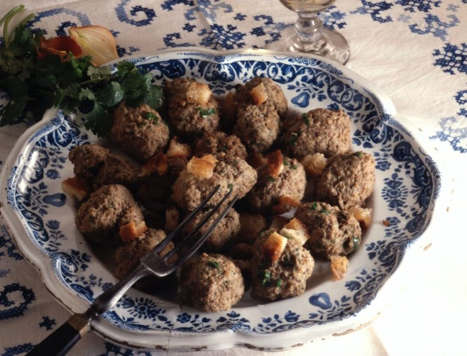

Liver quenelles à l'alsacienne (Lewerknepfele)

- 250 g chicken livers or veal liver
- 250 g sausage meat
- 100 g flour
- 1 egg
- finely chopped flat parsley (enough to make batter very green
- finely chopped onion
- salt and pepper
step 1
Grind the liver, then mix in sausage meat, egg, flour, parsley onion, salt and pepper
step 2
Bring the water to a boil in a big pot. When the water is simmering, and near boiling, make
dumplings from the batter, one at a time, by using two tablespoons (about one rounded tablespoon
per quenelle/dumpling).Add each raw quenelle into the simmering water slowly, one after the other.
Each raw quenelle dumpling will sink to the bottom, and rise to the top of the simmering water
as soon as it is cooked.
step 3
As soon as each quenelle is cooked and has risen to the surface, remove it with a slotted spoon
and place it in a strainer lined with paper towels. Continue until all the quenelle batter has been
poached
step 4
(Optional or for reheating)
Brown each quenelle in a pan with a little oil and serve with a green salad